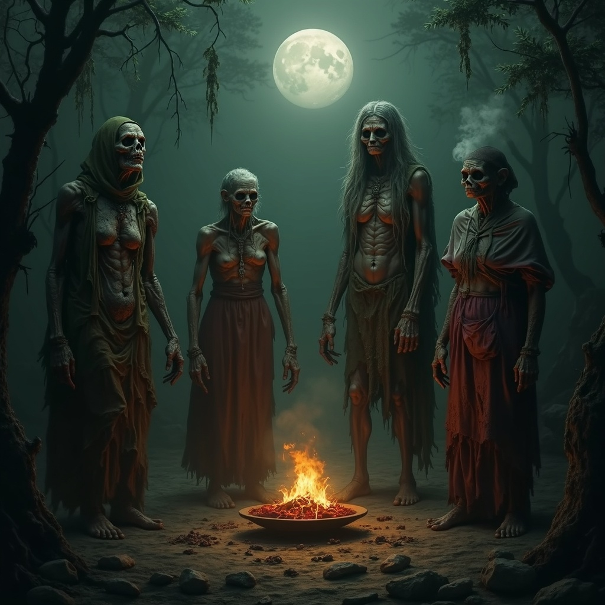

In the cursed corners of the Skazka multiverse, the great pantheon of the Annarr and Prir weaves the threads of
fate. Yet beneath their celestial shadows lurk Lesser Powers—mortals born with fragments of otherworldly might,
sustained not by divine birthright, but entirely by the devotion of those they bind themselves to—their patrons.
These beings are not gods. They are lumenless reflections of power, their vitality drawn from the warlocks and others who
worship them. A Lesser Power is almost as mortal as the flesh it once abandoned, but every fervent invocation, every
whispered prayer, every pact forged in the flicker of candlelight, feeds and elevates it onwards towards true divinity.
Fafnirog
The void dragon that slew the primal god Uzume.
Fafnirog, the Void Dragon, is an abomination who slew the primal god Uzume at the behest of Kaos. He is sustained by devotion. Cloaked in silence and entropy, Fafnirog devours memory and unravels the divine, his presence marked by the omen of a black star that drains warmth from the world. His symbols—the Hollow Spiral, the Cracked Eye, and the Ashen Fang—embody hunger and erasure, while his rites demand silence, sacrifice, and the surrender of self. Worshiped by warlocks and others who crave unmaking, he is a hollow dragon of absence, eternally teetering between oblivion and godhood, feeding only on those who dare to bind themselves to his abyss.
Symbols
- The Hollow Spiral: a coiled dragon tail curling inward into nothingness, representing hunger and inevitability.
- The cracked eye: a reptilian eye split down the middle, its pupil replaced by a starless void.
- The cursed fang: a tooth or fang wrapped in faint runes, always drawn dripping with black ichor.
Domains
- Silence (unmaking): His followers learn that silence is the truest prayer; power comes from the erasure of names, songs, and stories.
- Entropy (decay of the divine): They harness the weakness of gods and strongholds, unraveling divine wards and sanctities.
- Psychic feeding: His warlocks can strip memories from others and offer them to their patron as nourishment.
Rites
- Rite of hollow breath: A warlock inhales incense made from ground dragon bone and exhales into a vessel of water, creating a blackened surface where visions of forgotten truths appear.
- Rite of fang offering: Each initiate must break one tooth from their own mouth, stain it with blood, and cast it into flame; in return, they gain whispers from the Void Dragon in dreams.
- Rite of silent vigil: Devotees must sit in perfect silence for three nights under the stars, neither eating nor speaking. On the dawn of the fourth day, the first word spoken aloud becomes a vow bound to the Dragon.
Lore
- Unlike gods who embody ideals, the Void Dragon embodies absence. He does not create; he consumes. Every follower whispers their own ending into him, making him stronger, yet less real—always on the brink of unraveling.
- When the Dragon is worshiped in great numbers, a black star appears in the sky. Its light brings no warmth, only omen: crops fail, shadows lengthen, and divine prayers go unanswered.

The Hags
Cursed souls. Their true names have been lost to time, but each one represents Famine, Pestilence, Decay, and Madness.
Once celebrated for their beauty and arcane prowess, the Four Hags were powerful witches who sought immortality at any cost. Their ambition led them to strike a pact with Siluthis, the enigmatic god of decay and entropy. True to his word, Siluthis granted them eternal life—but at a steep price. Their bodies aged relentlessly, their once-vibrant forms withering into grotesque reflections of their former selves. Over time, their true names faded into obscurity, and they became known only as the Hags of Famine, Pestilence, Decay, and Madness. Embracing their new identities, they cultivated a following of devoted worshippers, elevating themselves to the status of minor deities within the pantheon of SkazkaWorld.
Symbols
- The withered crown: A decaying circlet, symbolizing the eternal yet deteriorating nature of the Hags' immortality.
- The hollow chalice:An empty goblet, representing the insatiable hunger and disease they spread.
- The cracked mirror: A shattered reflection, embodying the madness and distorted perceptions they induce.
Domains
- Famine: The domain of hunger and deprivation, where sustenance is scarce, and survival is a constant struggle.
- Pestilence: The realm of disease and decay, where sickness spreads unchecked, and the air is thick with contagion.
- Madness: The territory of delirium and insanity, where minds unravel, and reality becomes a malleable nightmare.
Rites
- Rite of withering: A sacrificial ceremony where followers offer their vitality to the Hags, symbolizing the acceptance of decay and the relinquishing of life force.
- Plague embrace: An act by why a contagion is intentionally contracted and spread, believed to purify and strengthen the body through suffering.
- Veil of madness: A trance-inducing rite that allows worshippers to glimpse the distorted truths of the universe, often leading to temporary or permanent insanity.
- Legends tell of a curse placed upon the Hags by a rival coven, causing their physical forms to deteriorate while their spirits remained intact. This curse bound them to their domains, ensuring their influence persisted through the ages.
Lore
- In their quest for immortality, the Hags made a fateful bargain with Siluthis, god of decay. They gained eternal life, but their bodies aged and withered, a constant reminder of their hubris.
- As their influence grew, the Hags attracted a following of devotees who revered them as embodiments of necessary suffering and change. Their cults spread across SkazkaWorld, often operating in secrecy.
- Their influence is centred most strongly around Blightmire.
Lolth
Lolth - Lesser Goddess of the Drow
Lolth stands as one of the most feared and reviled deities in Skazka's surface world, a lesser goddess whose influence far exceeds her divine rank through cunning and manipulation rather than raw power. Born of both drow and spider heritage, she possesses the ability to shift seamlessly between her seductive drow form and her terrifying arachnid shape, using whichever appearance best serves her current scheme. Known as the Weaver of Lies and the Spider Queen, Lolth delights in corruption, betrayal, and the systematic destruction of trust between mortals. Her beauty is matched only by her cruelty, and she is not above using her considerable sensual appeal as a weapon to ensnare victims in webs of desire and deceit. Those who worship her do so out of fear, ambition, or a twisted appreciation for her artistry in turning allies into enemies. While she claims dominion over the drow people, her true domain is chaos itself - she thrives in the shadows between conflicting factions, whispering poison into willing ears and watching civilizations tear themselves apart from within.
Symbols
- The entwined dagger: A curved dagger wrapped in spider silk, often depicted dripping with either blood or venom. This symbol represents Lolth's dual nature of seduction and betrayal - the silk appears delicate and beautiful, yet binds the weapon that delivers death.
- The inverted web: An eight-pointed web turned upside down, with a single dewdrop at its center. The inverted nature represents the overturning of natural order and hierarchy, while the dewdrop symbolizes the tears of those caught in her schemes. Often carved into obsidian or woven with silver thread.
- The twin shadows: Two overlapping silhouettes - one of a graceful drow maiden, the other of a massive spider - cast upon a wall or surface. This symbol appears spontaneously in places where Lolth's influence is strong, representing her shapeshifting nature and the duality of beauty and horror.
Domains
- Deception: Lolth grants her clerics the power to weave illusions, speak honeyed lies that sound like truth, and see through the deceptions of others. Her followers excel at creating false identities, forging documents, and manipulating emotions through carefully crafted falsehoods.
- Strife: The Spider Goddess thrives on conflict and division. Clerics of this domain can sow discord between allies, amplify existing tensions, and turn enemies against each other. They possess abilities to incite rage, create paranoia, and break bonds of trust and loyalty.
- Desire: Perhaps her most insidious domain, this grants power over lust, obsession, and want. Her clerics can inflame passions, create unnatural attractions, and bind others through their deepest desires. This domain also governs the magic of seduction, charm, and emotional manipulation.
Rites
- Ritual of seven betrayals: Performed during the new moon, this rite requires the participant to betray seven different individuals over the course of seven nights, each betrayal growing in magnitude. The ritual culminates with the betrayal of someone the participant claims to love. Successful completion grants Lolth's favor and enhanced magical abilities, particularly in illusion and enchantment magic. The ritual space is adorned with webs containing seven different types of venomous spiders.
- The web walkers communion: A highly dangerous ritual where devotees allow themselves to be bitten by sacred spiders and then enter a trance-like state while suspended in specially consecrated webs. During this communion, participants experience visions of Lolth's desires and receive cryptic instructions for future schemes. Many who attempt this ritual die from the venom, which Lolth considers a natural culling of the weak.
- The dance of dual forms: An elaborate ceremony performed by Lolth's priestesses, involving a complex dance that mimics the movements of both drow and spider. Participants gradually shed clothing and ornaments throughout the dance, symbolizing the shedding of false appearances. The ritual reaches its climax when the lead priestess shapeshifts (or magically appears to transform) between drow and spider forms. This rite is used to initiate new followers and to seek Lolth's blessing for major deceptions.
Lore
- Ancient texts speak of how Lolth was once a surface elf who made a pact with an ancient demon lord of spiders after being betrayed by her lover and exiled to the Underdark. The transformation into her current half-spider, half-drow form was both a curse and a gift - she gained immense power but lost her ability to truly love or trust. This origin story explains her obsession with betrayal and her particular hatred for surface elves and their gods.
- Lolth is said to maintain multiple courts throughout the Underdark where she appears in different guises, often playing various factions against each other without them realizing they serve the same goddess. These courts are elaborate stage plays of politics and intrigue, where every alliance is temporary and every friendship contains the seeds of future betrayal. Scholars believe she uses these courts to recruit her most promising servants and to test the loyalty and cunning of her existing followers.
- Drow lore speaks of an ancient prophecy stating that Lolth will one day weave a web so vast and complex that it will ensnare even the gods themselves, allowing her to ascend to greater divine power. This web is said to be made not of silk, but of the betrayals, broken oaths, and shattered alliances she has orchestrated throughout history. Some scholars believe this prophecy explains her seemingly random acts of manipulation - each one is actually a carefully planned strand in this ultimate web. The prophecy warns that when this web is complete, trust itself will become extinct from the world.
Jutus
The Divine Messenger
Jutus embodies the complex nature of a fallen deity seeking redemption and revenge in equal measure. Once the mighty Lord of the Underworld and Protector of Oy, his divine status was stripped away as punishment for allowing the dwarven people to break free from their divine indenture, reducing him to the role of mere messenger between gods and mortals. This demotion has left him bitter yet compassionate, caught between his divine nature and mortal concerns in a way that makes him uniquely invested in the struggles of everyday people. Often manifesting as a common thief or wandering rogue, Jutus moves through the world with the practiced stealth of one who has learned to operate in shadows, both literal and metaphorical. His resentment toward his fellow deities drives him to subtly undermine their grand designs while simultaneously offering aid to mortals who face injustice or oppression. Unlike other gods who view mortals as distant subjects, Jutus sees them as kindred spirits - beings trapped by circumstances beyond their control, struggling against forces far greater than themselves. This perspective makes him perhaps the most approachable of all deities, though his help often comes with the understanding that he expects mortals to help themselves as well.
Symbols
- The broken shackle: A length of heavy iron chain with one link deliberately shattered, often depicted with golden light streaming through the break. This symbol represents liberation from bondage and divine authority, as well as Jutus's role in the dwarven escape. It serves as both a reminder of his "failure" and a badge of honor for those who fight against oppression.
- The hooded messenger: A cloaked figure carrying a staff topped with wings, but with one wing broken or bent. The hood obscures the face, representing anonymity and the hidden nature of divine intervention. The broken wing symbolizes Jutus's diminished status while the staff represents his continued role as messenger between realms.
- The lockpick: An ornate skeleton key twisted into the shape of a lockpick, often crafted from tarnished silver or brass. This symbol represents Jutus's ability to open doors both literal and metaphorical - unlocking opportunities for mortals while also suggesting his thieving nature and his talent for bypassing divine restrictions.
Domains
- Liberation: Jutus grants power over freedom, escape, and the breaking of bonds both physical and spiritual. Clerics of this domain can unlock doors, break chains, dispel compulsions, and help others escape from prisons, slavery, or magical control. They excel at freeing the oppressed and providing sanctuary for those fleeing tyranny.
- Secrets: As a divine messenger who operates in shadows, Jutus governs hidden knowledge, espionage, and information. His clerics can uncover lies, gather intelligence, communicate across vast distances, and protect sensitive information. They serve as spies, investigators, and keepers of dangerous truths that could topple kingdoms or embarrass gods.
- Retribution: Born from his resentment toward his divine punishment, this domain channels righteous anger against injustice and the settling of scores. Clerics can track down wrongdoers, ensure that crimes don't go unpunished, and turn the schemes of the powerful against themselves. This domain also governs the protection of whistleblowers and those who speak truth to power.
Rites
- Rite of unbinding: Performed at dawn on the anniversary of the dwarven liberation, this ceremony involves participants symbolically breaking chains, locks, or bonds while reciting the names of those who have been freed from oppression. The ritual requires genuine acts of liberation - freeing a slave, helping someone escape an abusive situation, or breaking unjust laws. Successful completion grants Jutus's blessing for endeavors involving freedom and escape, and sometimes provides prophetic dreams about trapped souls who need assistance.
- The messengers gambit: A complex ritual involving the delivery of seven messages to seven different recipients without being detected by authorities or divine agents. Each message must contain a truth that the recipient needs to hear but doesn't want to know. The final message is delivered to a temple or shrine of another deity, containing a subtle challenge or criticism of that god's actions. This dangerous rite tests the participant's stealth, courage, and commitment to truth, with successful completion granting enhanced abilities in espionage and divine communication.
- The Thiefs confession: Unlike most religious confessions, this rite requires participants to openly admit to acts of theft, deception, or rule-breaking - but only those committed in service of justice or to help the innocent. The confession is made while performing an act of charity or kindness, symbolically balancing the scales. Jutus is said to personally hear these confessions and grant absolution along with guidance for future "necessary crimes" that serve the greater good.
Lore
- Ancient texts describe how Jutus was once among the most trusted of the divine council, serving as Lord of the Underworld with absolute authority over the realm of the dead and sworn protector of the realm of Oy. His downfall came when he discovered that the gods had bound the dwarven race into eternal servitude through trickery and divine coercion. Unable to stomach this injustice, Jutus secretly provided the dwarves with the knowledge and tools needed to break their divine bonds and escape to freedom. When the gods discovered his "betrayal," they stripped away most of his power and demoted him to the humiliating role of divine messenger - a constant reminder of his rebellion and a warning to other deities about the price of defying the divine order.
- Jutus is said to maintain a vast network of mortal agents, thieves, rebels, and outcasts who serve his goals of undermining divine tyranny and helping the oppressed. These agents, known as "Jutus's Keys," operate in secret throughout the world, identifying injustices and working to correct them through stealth, sabotage, and subversion. The network communicates through a complex system of coded messages, hidden symbols, and dead drops that even divine magic struggles to fully penetrate. Many members don't even know they serve Jutus, believing themselves to be part of various secular resistance movements or thieves' guilds.
- Drow seers and divine oracles speak of a prophecy stating that Jutus will one day deliver a message so powerful and revelatory that it will shake the very foundations of the divine order. This "Final Message" is said to contain the true names and hidden shames of all the gods, their secret weaknesses, and the ultimate truth about the nature of divinity itself. The prophecy claims that when this message is delivered, mortals will finally understand that gods are not infallible beings worthy of worship, but flawed entities who have simply accumulated power over time. Some scholars believe Jutus has been working toward this revelation for centuries, gathering divine secrets through his messenger role and waiting for the perfect moment to expose the gods' hypocrisy to the world.
The Wild Hunt
A collective spirit entity and lesser power
The Wild Hunt represents one of the most terrifying and mysterious phenomena in the spiritual realm - a collective consciousness formed from the vengeful souls of hunters who died with such fierce determination that they refused to accept death's finality. Neither truly alive nor properly dead, these spectral huntsmen exist in a liminal state between worlds, their individual identities merged into a singular, terrifying purpose that transcends mortal understanding. Every midwinter, when the veil between worlds grows thin and the nights reach their longest, this ghostly procession manifests across the countryside in a thunderous cavalcade of spectral hounds, phantom steeds, and ethereal huntsmen armed with otherworldly weapons. Their criteria for selecting victims remains one of the great unsolved mysteries of the supernatural world - some years they claim kings and heroes, other years they take simple farmers or wandering children, with no discernible pattern that mortal minds can comprehend. What drives them is equally enigmatic: some scholars believe they hunt to fill their ranks with worthy souls, others theorize they seek to balance some cosmic injustice, while the most disturbing theories suggest they simply hunt because hunting is all they remember how to do. Unlike traditional gods who can be bargained with, reasoned with, or appeased through worship, The Wild Hunt operates according to alien logic that makes them perhaps the most unpredictable and feared supernatural force in existence.
Symbols
- The Spectral Antler crown: A crown of translucent, ghostly antlers that seem to shift and move when viewed directly, often depicted wreathed in cold mist or ethereal flames. The antlers represent the primal nature of the hunt and the crown signifies their collective authority over life and death. This symbol appears carved into trees along their hunting paths and is said to manifest spontaneously in areas where they will soon ride.
- The Howling Horn: A curved hunting horn that appears to be carved from bone or ivory, with musical notes streaming from it that take the form of fleeing spirits. The horn represents the call that no living soul can ignore when The Wild Hunt rides, and the musical notes symbolize the souls they have claimed. The sound of this horn in dreams is considered an omen of impending visitation.
- The Endless Track: A series of hoofprints, paw prints, and boot prints that form an infinite spiral, with some prints appearing fresh while others fade into mist. This symbol represents the eternal nature of their hunt and the fact that once marked by them, one can never truly escape. The spiral suggests that their hunting paths eventually lead back to the beginning, trapping their quarry in an inescapable cycle.
Domains
- Death: The Wild Hunt governs the boundary between life and death, particularly violent or untimely deaths related to hunting, pursuit, or being hunted. Clerics who serve them can speak with the spirits of the recently deceased, sense impending death, and sometimes delay or hasten the moment of passing. They also possess abilities related to necromancy and communion with restless spirits.
- The Hunt: This domain encompasses all aspects of tracking, pursuit, and the primal relationship between predator and prey. Followers gain enhanced abilities in survival, tracking, and combat, as well as supernatural senses that allow them to hunt both physical and spiritual quarry. They can also summon spectral hounds and gain the ability to phase through obstacles during pursuit.
- Winter: The Wild Hunt is intrinsically tied to the darkest, coldest months when death comes easily and the natural world sleeps. This domain grants power over ice, snow, and bitter cold, as well as the ability to see clearly in darkness and move silently through winter landscapes. Clerics can create supernatural blizzards, freeze opponents, and draw strength from cold environments.
Rites
- Midwinter Vigil: Performed on the longest night of the year, this dangerous rite involves a community posting sentinels at crossroads, forest edges, and other liminal spaces where The Wild Hunt is likely to manifest. The vigil-keepers must remain awake and alert throughout the entire night, armed with blessed weapons and protective talismans. They burn special fires made from woods that spirits fear and ring bells to warn others of the Hunt's approach. Those who successfully complete the vigil without falling asleep or abandoning their posts are said to gain protection from supernatural pursuit for the following year, though some claim the rite actually draws The Wild Hunt's attention rather than repelling it.
- The offering of the worthy hunt: A controversial ritual where communities deliberately sacrifice their finest hunter to The Wild Hunt, believing this will satisfy their appetite and spare others. The chosen hunter must willingly participate, spending seven days and nights in the wilderness tracking a supernatural quarry - often a white stag or spectral wolf that appears only to those marked for the ritual. If the hunter successfully completes this impossible hunt, they are granted a year of supernatural hunting prowess but are forever marked by The Wild Hunt. If they fail, they vanish entirely, presumably claimed by the spirits to join their eternal procession.
- The Rite of false death: Desperate individuals who believe they are marked by The Wild Hunt sometimes attempt this ritual, which involves staging an elaborate fake death complete with burial or funeral pyre. The participant must remain "dead" for three days and nights, during which they experience visions of the Hunt and sometimes communicate with its members. If they emerge from this false death unchanged, they may have successfully confused the spirits and gained temporary reprieve. However, many who attempt this rite are found truly dead, suggesting The Wild Hunt is not easily deceived.
Lore
- Ancient legends speak of the original Wild Hunt as a group of legendary hunters who pursued a mythical creature - variously described as a divine stag, a dragon, or Death itself - across multiple realms and dimensions. Their quarry led them on such an epic chase that they passed through the boundaries of life and death without realizing it, becoming trapped in an eternal pursuit that stripped away their humanity piece by piece. Some versions claim they were cursed by a dying god for their hubris, while others suggest they willingly chose eternal hunting over eternal rest. The creature they originally pursued is said to still lead them on their midwinter rides, forever staying just beyond their reach.
- Scholars who study The Wild Hunt have attempted to discern patterns in their selections, leading to numerous theories but no definitive answers. Some believe they take those who have cheated death, others think they claim individuals who possess rare spiritual qualities, and still others theorize they abduct people to serve specific roles in their otherworldly realm. One disturbing theory suggests that each member of The Wild Hunt was once an abductee who gradually transformed into a hunter themselves, meaning every person they take eventually becomes part of their number. The most unsettling accounts come from those few individuals who claim to have escaped The Wild Hunt, reporting that the spectral hunters seemed to be testing them rather than simply pursuing them.
- Some supernatural scholars believe The Wild Hunt serves as enforcers or agents for a greater power - possibly the Winter Court of the fae or some primordial entity that rules over death and winter. According to this theory, their seemingly random abductions are actually targeted operations designed to maintain some cosmic balance or fulfill ancient pacts made between the mortal world and supernatural powers. Evidence for this includes reports of The Wild Hunt avoiding certain locations protected by specific wards, their apparent coordination with other winter spirits, and the fact that their activities sometimes seem to prevent greater calamities from befalling regions they visit. If true, this would mean The Wild Hunt, despite their terrifying nature, might actually serve as a necessary force that protects the world from even worse supernatural threats.
Agramaul
Gatekeeper to the afterlife and judge of souls
Agramaul stands as perhaps the most solemn and impartial of all divine beings, serving as the eternal Gatekeeper to the afterlife and the ultimate Judge of Souls who determines the fate of every mortal spirit that passes from the realm of the living. Unlike other deities who may be swayed by worship, bribes, or personal relationships, Agramaul operates with absolute moral authority and unwavering dedication to cosmic justice, weighing each soul against the sum total of their actions, intentions, and the impact they had upon the world during their mortal existence. Neither cruel nor merciful in the traditional sense, Agramaul embodies perfect justice - a concept that transcends mortal understanding of fairness and operates according to universal principles that account for circumstance, intention, capability, and consequence in ways that ensure each soul receives exactly what their life's choices have earned them. Standing at the threshold between life and death, Agramaul serves not only as judge but also as guardian, ensuring that no soul passes to its final destination without proper evaluation, and that the cosmic balance between good and evil, justice and chaos, remains eternally maintained. Those who have experienced near-death encounters describe meeting a figure of terrible beauty and infinite wisdom, whose very presence strips away all pretense and deception, leaving souls bare before the ultimate accounting of their existence.
Symbols
- The scales of truth: A set of perfectly balanced scales that never tip, often depicted wreathed in golden light with one pan holding a human heart and the other containing a feather of pure white light. The scales represent Agramaul's role as judge, while the heart symbolizes the mortal soul and the feather represents absolute truth and moral purity. The scales are said to weigh not just deeds, but the intentions behind them.
- The Eternal gate: A massive, ornate doorway carved from black stone inlaid with the dying cries of mortals, standing open to reveal not darkness but a swirling cosmos of stars and possibilities. The gate represents the threshold between life and death, and the runes are said to contain the true names of every soul that has ever passed through. The open nature of the gate signifies that death comes to all, while the cosmic vista beyond suggests the infinite possibilities of the afterlife.
- The All-seeing eye: A single, enormous eye surrounded by concentric rings of smaller eyes, all rendered in silver and gold. The central eye blazes with inner light and seems to peer directly into the soul of whoever views it. This symbol represents Agramaul's ability to see all truths, past all deceptions, and into the very essence of a soul's moral character. The surrounding eyes symbolize the countless perspectives and considerations that go into divine judgment.
Domains
- Death: Agramaul governs the transition from life to death and the proper ordering of the afterlife. Clerics of this domain can ease the passing of the dying, communicate with souls awaiting judgment, and ensure that the dead remain properly dead. They serve as psychopomps, guiding lost souls to their final destination, and as guardians against undead abominations that violate the natural order of death.
- Justice: As the ultimate arbiter of cosmic justice, Agramaul grants power over truth, judgment, and the enforcement of moral law. Clerics can detect lies, compel truthfulness, and deliver divine retribution to those who have escaped mortal justice. They excel at solving crimes, exposing corruption, and ensuring that the innocent are protected while the guilty face appropriate consequences for their actions.
- Knowledge: Agramaul possesses perfect knowledge of every soul's deeds and the wisdom to judge them fairly. Clerics of this domain can access memories of the dead, understand the consequences of actions across time, and gain insight into the moral implications of complex situations. They serve as counselors, historians, and keepers of the moral lessons learned from the lives and deaths of countless souls.
Rites
- Final confession: A sacred ritual performed for the dying, where a priest of Agramaul helps the departing soul make a complete and honest accounting of their life's deeds. The ritual involves burning special incense that is said to clear the mind of self-deception and allow the soul to see their actions with perfect clarity. The dying person must speak aloud every significant moral choice they remember making, both good and evil, while the priest records their words in a sacred tome. This confession is believed to ease the soul's passage through judgment, not by granting forgiveness, but by ensuring they face Agramaul with complete self-awareness and acceptance of their moral legacy.
- The trial of the living: A complex judicial ritual used to determine guilt or innocence in cases where mortal justice has failed or where supernatural elements are involved. The accused is brought before an altar of Agramaul and must submit to a series of tests designed to reveal their true nature and the extent of their guilt or innocence. These tests include walking through flames that burn only the guilty, speaking oaths that physically prevent lies, and facing visions of their victims or those they claim to have helped. The ritual concludes with divine judgment manifesting as physical signs - guilty parties may find themselves marked with visible stigma, while the innocent are blessed with protective auras.
- The Weighing of consequences: Performed by communities facing difficult moral decisions with far-reaching consequences, this ritual seeks Agramaul's guidance in understanding the full moral implications of their choices. Participants must fast for seven days while contemplating their decision, then gather at dawn to place symbolic representations of their potential choices on a replica of Agramaul's scales. Through meditation, prayer, and sometimes divine vision, participants gain insight into how their decisions might affect not just immediate outcomes, but the moral fabric of their community and the souls of all involved. The ritual doesn't provide easy answers but grants the wisdom to make informed moral choices.
Lore
- Ancient texts describe how Agramaul was appointed to the role of Judge of Souls after the first mortal death created chaos in the cosmic order. Before judgment existed, souls wandered aimlessly between life and death, creating havoc in both realms and preventing the natural cycle of existence from functioning properly. The other gods, recognizing the need for a final arbiter who could not be corrupted or influenced, elevated Agramaul from among their number and granted the power to see into the very essence of souls. The first soul judged was said to be that of a great hero who had committed terrible acts in service of good causes, and Agramaul's decision established the principle that intentions matter as much as actions, but do not excuse the consequences of one's choices.
- Agramaul is said to maintain an infinite ledger that records not just the deeds of every soul, but the ripple effects of those deeds throughout time and space. This cosmic book, known as the Akashic Record of Moral Consequence, allegedly shows how every choice made by every soul affects the lives of others, the balance of good and evil in the world, and the overall spiritual evolution of existence itself. Some scholars believe that accessing even a fragment of this ledger would drive mortals mad with the weight of universal moral complexity, while others theorize that the ledger is actually woven into the fabric of reality itself, making every moment of existence a page in Agramaul's eternal record.
- Eschatological texts speak of a time when Agramaul will close the gates to the afterlife and conduct a final, universal judgment of all souls that have ever existed, living and dead alike. This event, known as the Great Reckoning, is prophesied to occur when the moral balance of the universe becomes so disrupted that the cosmic order itself is threatened. During this final judgment, every soul will be re-evaluated in light of the complete moral history of existence, potentially changing their eternal fate based on how their actions contributed to or detracted from universal harmony. Some interpretations suggest this will result in a restructuring of the afterlife itself, while others believe it will bring about the end of the cycle of life and death entirely, ushering in a new phase of existence where souls no longer require judgment because they will have achieved perfect moral clarity.
×